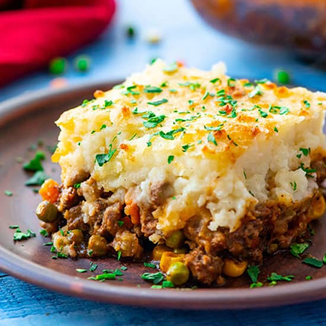

Shepherd's Pie

Layered casserole of beef, carrots, and potato. Filled to the brim with flavor. 30 minutes prep time and 20 minutes cooking time, total of 50 minutes. Serves 6.
- 4 large potatoes, peeled and cubed
- 1 tbsp. butter
- 1 tbsp. finely chopped onion
- 1/4 cup shredded cheddar cheese
- salt and pepper, to taste
- 5 carrots, chopped
- 1 tbsp. vegetable oil
- 1 onion, chopped
- 1 lb. lean ground beef
- 2 tbsp. all-purpose flour
- 1 tbsp. ketchup
- 3/4 cup beef broth
- 1/4 cup shredded cheddar cheese
- Bring a large pot of salted water to boil. Add potatoes and cook until tender but still firm, about 15 minutes. Drain and mash.
Mix in butter, finely chopped onion, and 1/4 cup shredded cheese. Season with salt and pepper to taste, set aside.
- Bring a large pot of stalted water to boil. Add carrots and cook until tender but still firm, about 15 minutes. Drain, mash, and set aside.
Preheat oven to 375 degrees F (190 degrees C).
- Head oil in large grying pan, add onion and cook until clear. Add ground beef and cook until well-browned.
Pour off excess fat, then stir in flour and cook 1 minute. Add ketchup and beef broth. Bring to boil, reduce heat and simmer for 5 minutes.
- Spread the ground beef in an even layer on the bottom of a 2 qt. casserole dish. Next, spread layer of mashed carrots.
Top with mashed potato mixture and sprinkle with remaining shredded cheese.
- Bake in preheated oven for 20 minutes or until golden-brown.
Return to Home